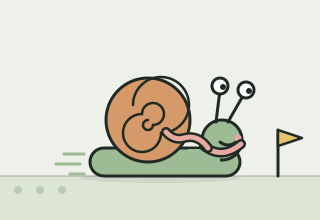

today
Good afternoon.
One tap is a whole check-in.
Today's check-in
your usual:
pick a Tuck from the sidebar
Days you showed up
9in October. no catching up.
this week · example data
Small things
On your shelf

Trail scarf for the web game
Found after 9 days this month. Tuck wears it in the garden map. Cosmetic only.
tuckshell headlamp
Not found yet. Run tuckshell unlock in your terminal.